Current functionality, controls and states · redesign inventory
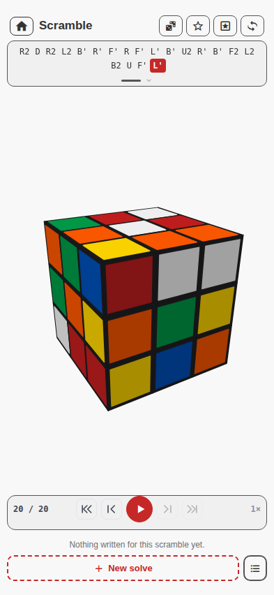
Scramble home.
| Surface | Job | Owns/edits |
|---|---|---|
| Scramble | Generate, animate, inspect, save and revisit scrambles; list attempts. | Current scramble, favorites, solve cards. |
| Solve | Record physical turns, inspect playback, set orientation, lock method boundaries and tag algorithm runs. | One open solve. |
| Algorithms | Search/filter the personal algorithm library and reach advanced management. | Library projection; entry/workbench edit records. |
| Methods | Browse presets, duplicate into user variants, rename/reorder stages and manage assignments. | User method catalogue. |
| Journey | Show derived beginner-to-advanced practice progress. | Nothing stored; reads solves/checks. |
Scramble, cube, player and attempt list.
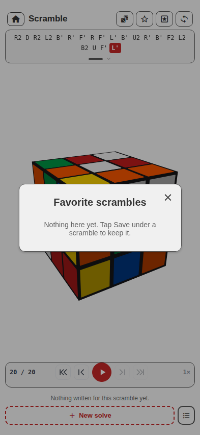
Favorite-scramble modal.
| Control | What it does |
|---|---|
| Back to games | Returns to hub. |
| New scramble | Generates a fresh valid 20-move scramble and resets the player to its end. |
| Save / unsave | Toggles the current scramble in Favorites. |
| Favorites | Opens saved scrambles; load or delete an item. |
| Other side / orbit | Moves the view to the opposite three faces; dragging orbits the cube. |
| Notation token | Seeks playback to that move. |
| Show whole thing | Expands/collapses long notation presentation. |
| Scrubber | Seeks continuously through the move sequence. |
| Start / previous / play / next / end | Transport controls for scramble animation. |
| Turn speed | Cycles playback rate. |
| New solve | Opens method choice and creates an attempt. |
| Compare | Appears with enough attempts; compares stages/counts across solves. |
| Algorithms | Pushes the personal library. |
| Solve card | Opens that attempt; highlights current/in-progress state. |
| Solve card menu | Rename, duplicate or delete attempt. |
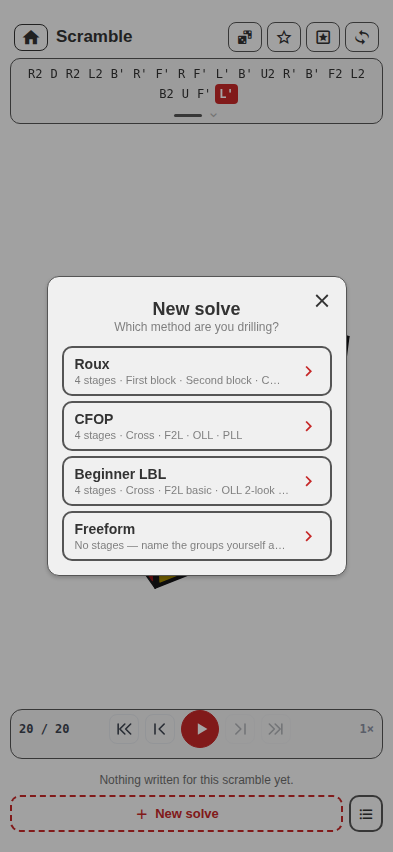
Method picker.
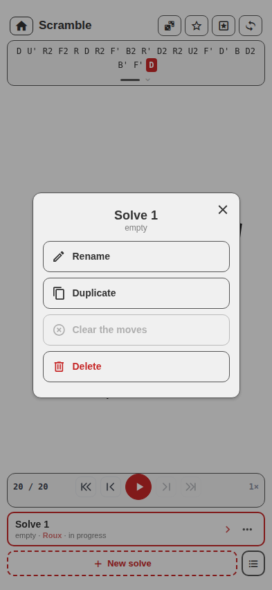
Attempt menu.
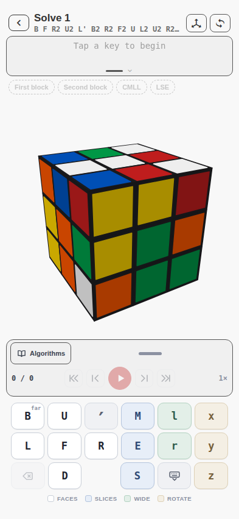
Solve with move pad.
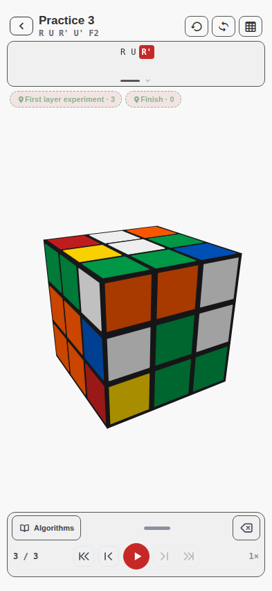
Collapsed move-pad state.
| Control / gesture | What it does |
|---|---|
| Orientation / hold | Before moves, choose a whole-cube starting orientation. “Inspecting” (`null`), confirmed no rotation (`''`) and notation are distinct states. |
| Finger turn | On native, turning a sticker writes the corresponding move after the gesture settles. |
| Move pad | Writes face, slice, wide and rotation moves; Prime modifies the next/base move. |
| Type an algorithm | Pastes/validates notation as a secondary input path. |
| Undo last move | Removes the final authored move. |
| Pad handle | Shows/hides the manual drawer without changing behavior of the cube. |
| Transport/scrubber | Seeks and animates authored solve notation. |
| Stage rail | Displays method stages, current stage and boundary exit-check status. |
| Lock/place boundary | Places or moves a stage marker at the current scrubber cursor. |
| Algorithms | Opens solve-side sheet to apply an entry or save/tag a selected run. |
| Run marker | Shows named algorithm boundary; toggles folded/expanded move display. |
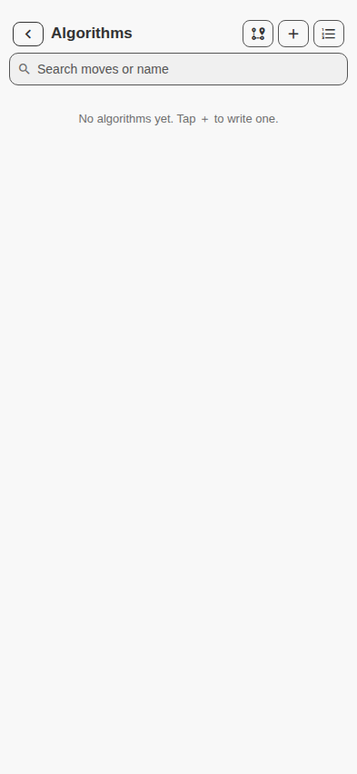
Empty library.
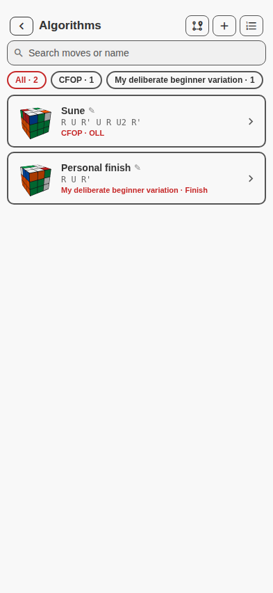
Seeded library with cases/assignments.
| Control | What it does |
|---|---|
| Back | Returns to scramble or prior method-stage view. |
| Journey | Pushes derived practice track. |
| ＋ | Opens cube-first workbench; disabled when the capped library is full. |
| Methods | Opens catalogue/builder. |
| Search | Matches algorithm name or notation. |
| Filter chips | All, Unassigned and only method filters that lead to entries; counts are live. |
| Entry card | Shows three-face starting case, name, moves and stage assignments; opens entry. |
| Stage assignment mode | From a method stage, toggles between linked-only list and whole-library assignment. |
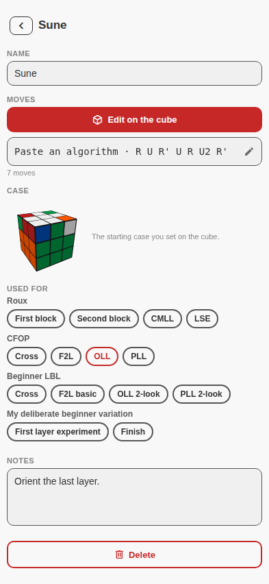
A saved algorithm entry.
| Field/control | Function |
|---|---|
| Name | Editable unique display name; duplicates receive a suffix. |
| Three-face preview | Shows authored setup/start, or inverse-derived start for older/pasted entries. |
| Moves | Validated algorithm notation; required. |
| Paste/edit notation | Opens parameterized text modal as a secondary input path. |
| Assignments | Links the entry to any method/stage pair; reciprocal with method-stage library views. |
| Notes | Free text saved on every edit. |
| Delete | Removes personal entry after confirmation. |
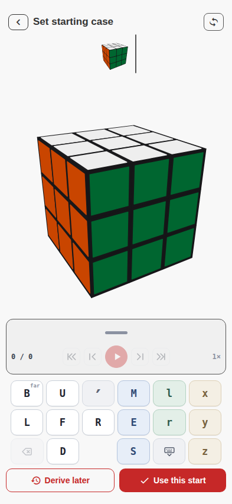
Workbench at authored-start step.
| Capability | Why it exists |
|---|---|
| Authored setup | An inverse is not always the actual position from which the player practices. |
| Inverse fallback | Older/pasted algorithms still get a deterministic starting case. |
| Large cube + compact preview | Separates active authoring from the stable reference state. |
| Shared transport/track/pad | Keeps solve and workbench notation behavior aligned. |
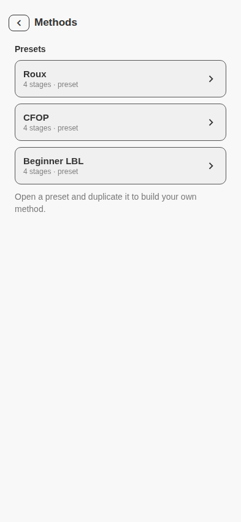
Preset/user catalogue.
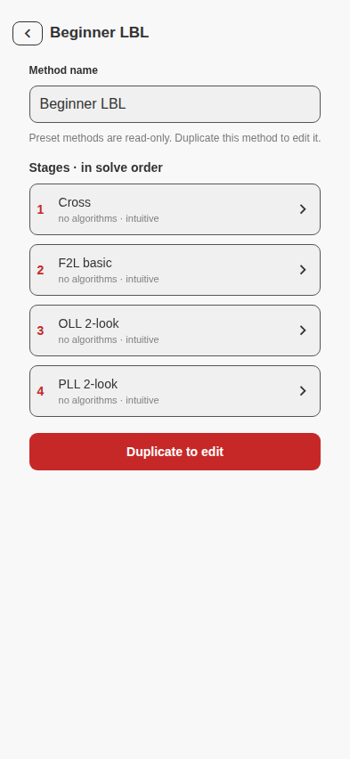
Read-only preset detail.
| Control | What it does |
|---|---|
| Method row | Opens stages, linked-algorithm counts and editing surface. |
| Stage row | Opens exact method/stage library view. |
| Duplicate to edit | Creates a user variant with its own id and `from` ancestry. |
| Method name | Editable for user variants; uniqueness enforced. |
| Stage name | Renames the stage and matching solve markers/algorithm assignments in one operation. |
| Up/down | Reorders user stages. |
| Add/remove stage | Changes user stage vocabulary within caps; duplicates refused. |
| Use for new solves | Shows/hides user variant in the solve method picker without deleting it. |
| Duplicate method | Creates another independent variant. |
| Delete method | Refused while a saved solve still references it. |
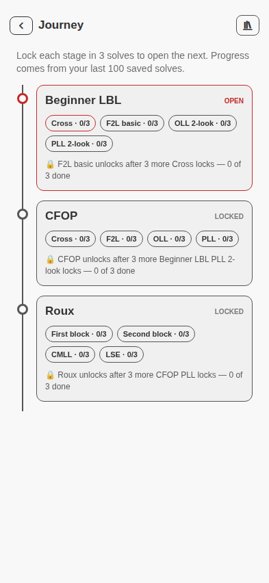
Fresh journey.
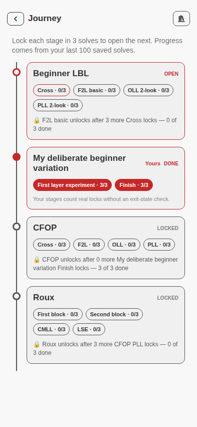
User variant and derived progress.
| Feature/state | Current behavior |
|---|---|
| Compare | Available after multiple attempts for one scramble; aligns methods/stages and exact move counts in a modal table. |
| Apply saved algorithm | From solve Algorithms sheet, appends only the saved moves at the live end and visibly plays them. |
| Save/tag run | Select token-bounded moves; rejects cross-stage selection; stores a named end-exclusive annotation without rewriting solve notation. |
| Fold run | Named boundary can collapse underlying moves into a chip and expand them again. |
| Exit-state verification | Preset stage rail distinguishes a passing boundary from a failed one; user stage is unverified, not failed. |
| Resume | Cube keeps its nested navigator in memory on background/resume. Authored work and view persist; scrub position and speed rewind. |
| Corrupt/older save | Collections sanitize independently by shape; absent newer fields become empty rather than requiring migration. |
{ scramble, favorites, solves, algorithms, methods, workspace }. A solve includes scramble, name, method, orientation, notation, phase markers, tagged runs and timestamps. Phase ranges and journey progress are derived.
Any proposed structure should explicitly place or retire each capability: